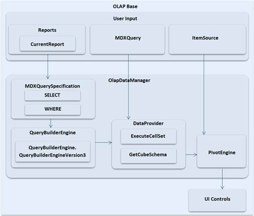

The OLAP Base is a class library that contains several namespaces and classes to perform data processing operations required by OLAP controls. OLAP base is the processing unit of all Syncfusion OLAP controls. From establishing the connection and retrieving the data, processing it and providing the formatted input for each control, everything is taken care by the OLAP base.
Syncfusion OLAP controls communicate to the OLAP cube through the OlapDataManager class available in Syncfusion.Olap.Base namespace.

Figure 2: OLAP Base Architecture
Note: This class library was organized under Syncfusion.Olap.Base assembly.